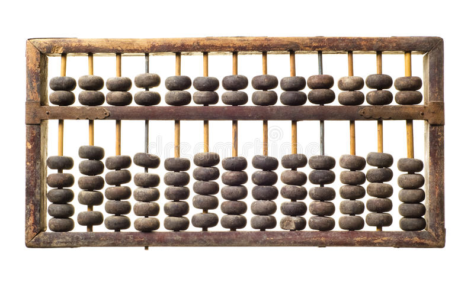
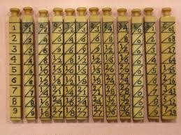
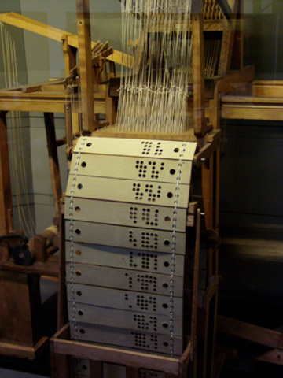
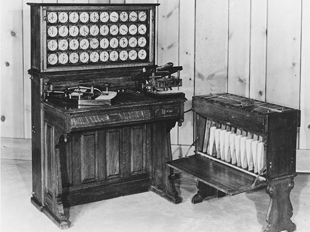
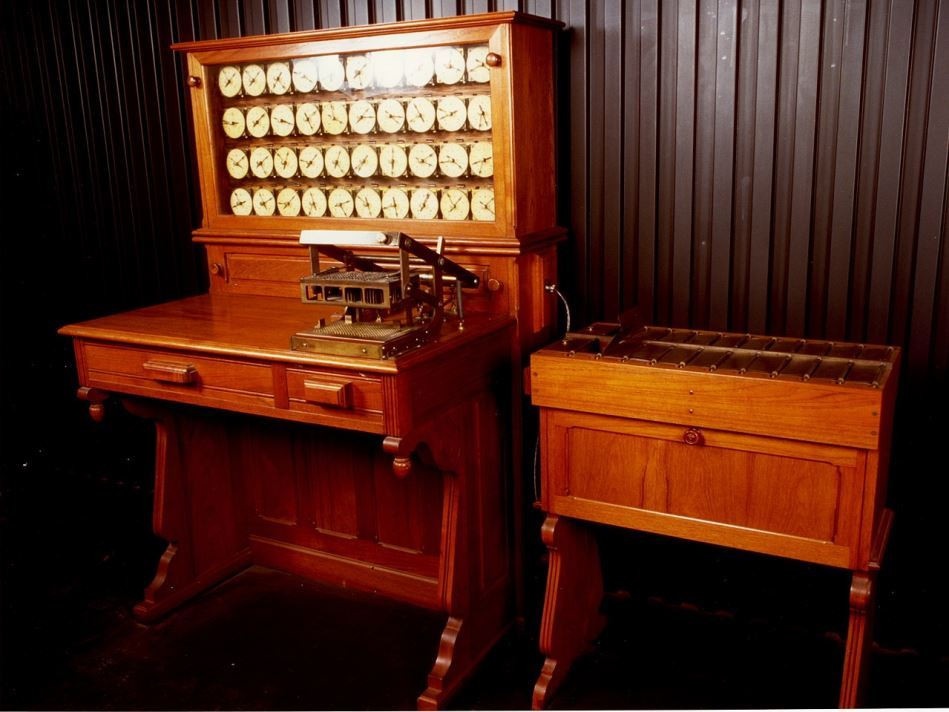

Podemos observar uma relação direta entre a evolução da tecnologia e a
evolução humana
Exemplos de máquinas
Pai da computação
Alan Turing
Clique nas setas para ver algumas das máquinas selecionadas
4.000 a.C.

Ábaco
???
Um aparelho feito em uma placa de argila onde se anotavam os
algarismos, para facilitar contas
1617

Ossos de Napier
John Napier
Um conjunto de barras colocadas de modo que a resposta da
multiplicação era obtida somando números nas seções horizontais ao
lado
1723

Tear para tecer desenhos de seda
Basille Bouchon
Haviam folhas de papel perfurados, onde apenas as agulhas
coincidente com os furos de tais papeis trabalhavam
1802

Tear de Jacquard
Joseph Jacquard
Joseph usou Cartões Perfurados para controlar suas máquinas de
tear, assim automatizando o processo
1890

Tabulador de Hollerith
Hermann Hollerith
Hollerith aperfeiçoou os cartões de Jacquard para acelerar a
apuração do censo dos EUA. Ele usou os cartões perfurados para
armazenar as informações
Após essas máquinas tivemos um avanço grande na tecnologia, que
permitiu a criação de máquinas cada vez mais rápidas e menores.
Fomos de computadores com mais de 15 metros, para máquinas de 30cm
Porém, com a facilidade do acesso a informação, tivemos alguns
malefícios psicológicos nos seres humanos
Um deles é o: Technostress
Sintomas incluem:
Vicio em aparelhos eletronicos
Alterações de sono
Ansiedade
Falta de foco
Aula 3
Sistemas da informação
Um sistema de informação são componentes que se relacionam entre si,
coletando, manipulando, armazenando e disseminando dados.
Categorias e Conceitos
Dados são fatos brutos
Informações são dados organizados de maneira a fazer sentido, colocando
eles dentro de um contexto
Conhecimento é o que nós obtemos ao tratarmos a informação de forma que
ela mude um sistema.
O valor de uma informação está ligado a como ela ajuda alguém a tomar
uma decisão
Sistemas
são um conjunto de elementos que interagem para realizar objetivos
Qualquer coisa que possa ser decomposta em partes pode ser considerado
um sistema. E essas "partes", são chamadas de subsistema, que por si só
também podem ser sistemas, gerando um sistema composto por sistemas
A visão clássica de um sistema e como ele trata os dados pode ser
separada em:
Entrada
Processamento
Saída
Vamos utilizar um microondas como exemplo: Colocamos na entrada uma
comida fria, ele faz o processamento, e nos entrega uma comida quente.
Um sistema também recebe dados como entrada, e processa, nos entregando
informações
Aula 4
Sistemas de numeração
Com a evolução dos cálculos foi se necessário que houvesse uma evolução
de como escrevemos um número
O sistema mais utilizado mundialmente é o hindu-arábico, desenvolvido no
século VI, Esse conjunto tem 10 símbolos
Agora com os números, vários sistemas para agrupar, contar, ordenar etc
esses números
O que mais utilizamos é o sistema DECIMAL, mas além deles são
extremamente relevantes os sistemas BINÁRIO e HEXADECIMAL
Sistema Binário:
Algarismos: 0, 1
Sistema Hexadecimal:
Algarimos: 0, 1, 2, 3, 4, 5, 6, 7, 8, 9, A, B, C, D, E, F,10
Sistema Decimal:
Algarismos: 0, 1, 2, 3, 4, 5, 6, 7, 8, 9
Aula 6
Álgebra Booleana
A álgebra booleana recebe esse nome pois foi inventada por George Boole,
em 1854
Nada mais é do que um método de simplificar circuitos lógicos, que
recebem apenas dois valores
Temos as portas lógicas And, Or, NOT, NAND, NOR e XOR
AND
Testa se todas as entradas são positivas
OR
Testa se ao menos uma das entradas é positiva
NOT
Testa se a entrada é negativa
NAND
Testa se ao menos uma das entradas é negativa
NOR
Testa se ambas as entradas são negativas
XOR
Testa se somente uma das entradas é positiva
Aula 8
Estrutura e Funcionamento de um Computador
Um computador é um conjunto de dispositivos que consegue processar
informações
Von Newman propôs uma arquitetura que consiste de 4 partes
CPU
Sistemas de Armazenamento
Sistemas de Entrada e Saída
Barramentos, que ligam todas essas partes
A velocidade de processamento de um computador em Hertz é dada por um
Clock. Isso se refere há quantos ciclos um computador consegue realizar
a cada segundo
Aula 9
Hierarquia e Características de Memórias
Na prática, a memória de um computador é mais do que um componente, e
sim, um subsistemas de componentes
dentro da memória do computador, organizamos elas por frequência de uso
e capacidade. São inversamente proporcionais.Quanto menor a memória,
maior a frequência de uso do computador (e seu custo)
Aula 11
Sistema Operacional
O Sistema Operacional é uma camada de software que fica entre o hardware
e os aplicativos controlados pelo usuário
O Sistema Operacional é o que permite que o usuário realize operações
como apagar memória, gerenciar dispositivos de E/S., e tudo que interage
diretamente como o hardware da máquina
Aula 12
Hardwares de rede
Antigamente as redes eram dispostas numa empresa de maneira
compartilhada, dependendo de um computador ou um conjunto de
computadores, que interligava todos
Com a chegada da internet, hoje as redes podem estar ligadas em redes
não locais
Temos os dispositivos ativos e passivo da rede
O passivo da rede são elementos responsáveis pelo transporte de dados,
que funcionam SEM analisar os dados Já os ativos de rede, analisam os
dados que são transmitidos e os gerenciam Exemplos de ativos de rede